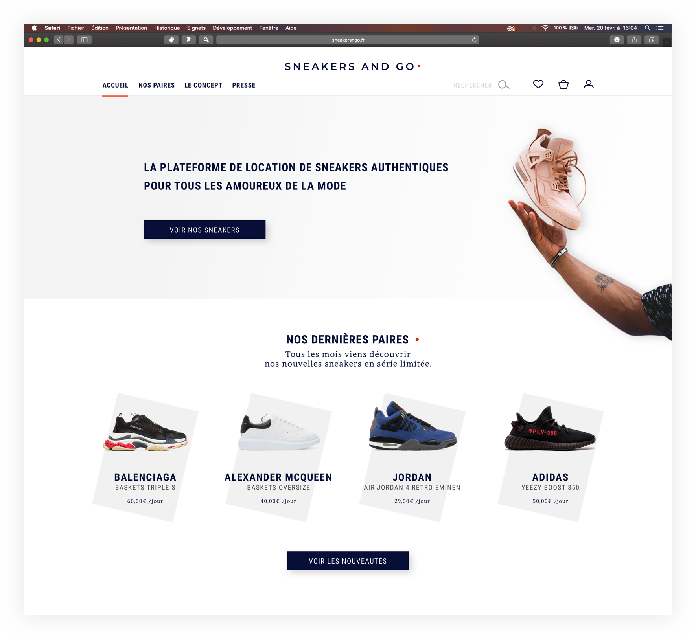
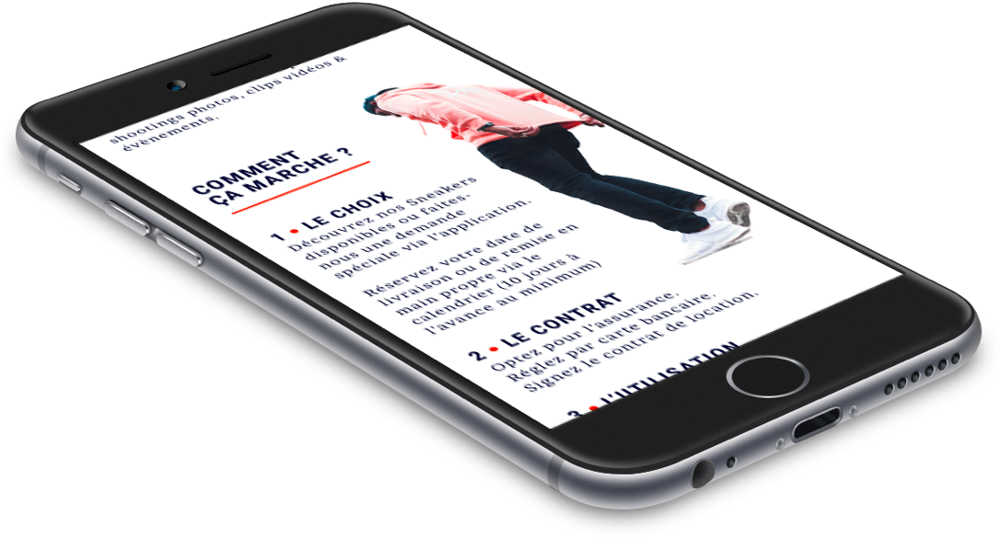
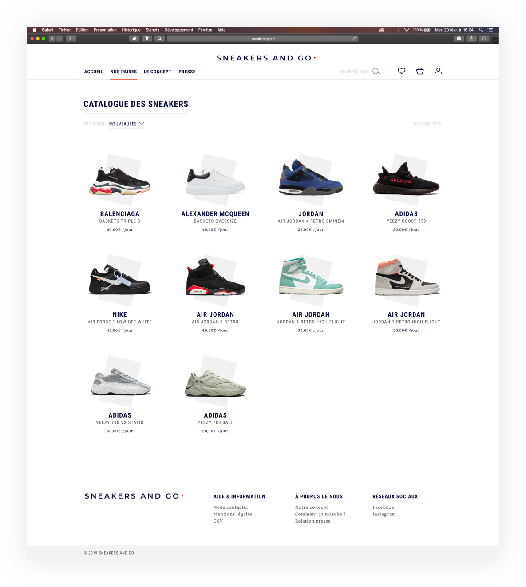
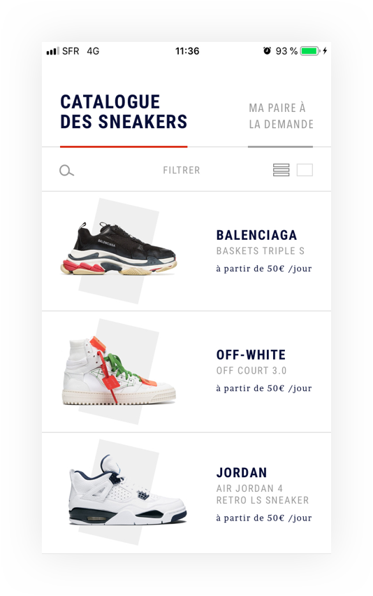

Concept innovant, Sneakers and go a pour ambition de satisfaire tout ceux qui souhaitent être à la pointe de la mode le temps d’un shooting photo, d’un clip vidéo ou d’un évènement spécial. L’usage commence à prendre le pas sur la possession et c’est dans ce sens que ce service inédit de location de baskets de luxe a été pensé.
La mission était de réaliser toute la charte graphique, logotype compris, et d’en faire naître une application et un site web e-commerce.
Une identité qui rejoint deux mondes
Epuré et fin pour répondre aux codes du luxe des marques que propose Sneakers and go, sur des accents pop et dynamiques pour le caractère streetwear de la sneaker.
L’enjeu était d’unir ces deux univers en une seule et même identité.




Une identité qui rejoint deux mondes
Epuré et fin pour répondre aux codes du luxe des marques que propose Sneakers and go, sur des accents pop et dynamiques pour le caractère streetwear de la sneaker.
L’enjeu était d’unir ces deux univers en une seule et même identité.